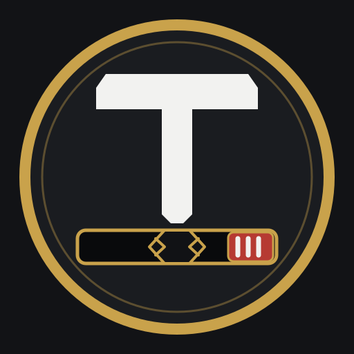

TATAME / PLANO Painel de testesACOMPANHAMENTO DO PROJETO
Plano de evolução.
Acompanhe o que já foi feito, o que você validou e os próximos passos do Tatame. Os estados são atualizados conforme avançamos juntos.
VISÃO GERAL
Progresso do plano
0 validados
0 feitos, aguardando validação
0 pendentes
ROTEIRO COMPLETO
Etapas e tarefas
Os estados refletem o plano mantido no README: [ ] pendente, [x] feito e aguardando sua validação, [v] validado por você.